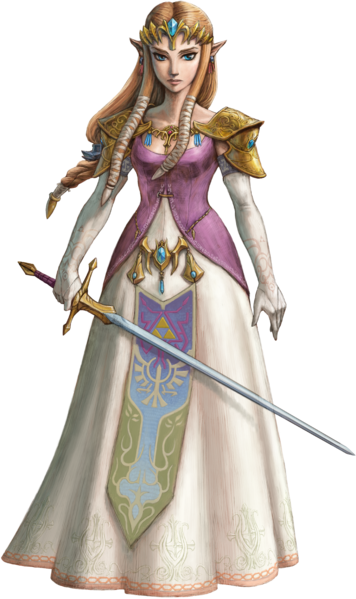
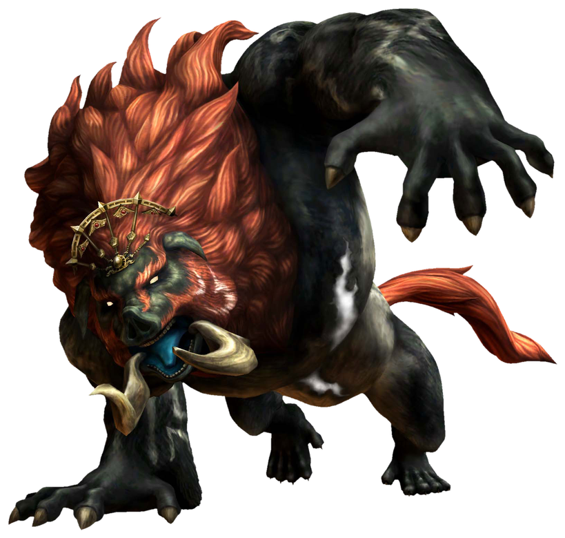

|
LinkThe central protagonist of The Legend of Zelda series, Link is the name of various young men who characteristically wear a green tunic and a pointed cap, and are the bearers of the Triforce of Courage. In most games, the player can give Link a different name before the start of the adventure, and he will be referred by that given name throughout by the non-player characters (NPCs). The various Links each have a special title, such as "Hero of Time", "Hero of the Winds" or "Hero chosen by the gods". Like many silent protagonists in video games, Link does not speak, only producing grunts, yells, or similar sounds. Despite the player not seeing the dialogue, it is referenced second-hand by in-game characters, showing that he is not, in fact, mute. Link is shown as a silent protagonist so that the audience is able to have their own thoughts as to how their Link would answer the characters instead of him having scripted responses. |
Princess ZeldaPrincess Zelda is the princess of Hyrule and the guardian of the Triforce of Wisdom. Her name is present in many of her female ancestors and descendants. While most games require Link to save Zelda from Ganon, she sometimes plays a supporting role in battle, using magical powers and weapons such as Light Arrows to aid Link. With the exception of the CD-i games (which were not official Nintendo games), she was not playable in the main series until Spirit Tracks, where she becomes a spirit and can possess a Phantom Knight that can be controlled by the player. Zelda appears under various other aliases and alter egos, including Sheik (in Ocarina of Time) and Tetra (in The Wind Waker and Phantom Hourglass). In Skyward Sword, it is revealed that the Zelda of that game is a reincarnation of the goddess Hylia, whose power flows through the royal bloodline. The name "Zelda" derives from the American novelist Zelda Fitzgerald. |
X

|
X

|
GannonGanon, also known as Ganondorf in his humanoid form, is the main antagonist and the final boss in the majority of The Legend of Zelda games. In the series, Ganondorf is the leader of a race of desert brigands called the Gerudo, which consists entirely of female warriors save for one man born every one hundred years. He is significantly taller than other human NPCs, but his looks vary between games, often taking the form of a monstrous anthropomorphic boar. His specific motives vary from game to game, but most often his plans include him kidnapping Princess Zelda and planning to achieve domination of Hyrule and presumably the world beyond it. To this end, he seeks the Triforce, a powerful magical relic. He often possesses a portion of the Triforce called the Triforce of Power, which gives him great strength. However, it is often not enough to accomplish his ends, leading him to hunt the remaining Triforce pieces. Unlike Link, Zelda, and most other recurring characters, he is actually the same person in every game, with the exception of Four Swords Adventures, where he is a reincarnation of the original. In each game the battles with him are different and he fights using different styles. The game Skyward Sword indicates that Ganon is a reincarnation of an evil deity known as Demise. |